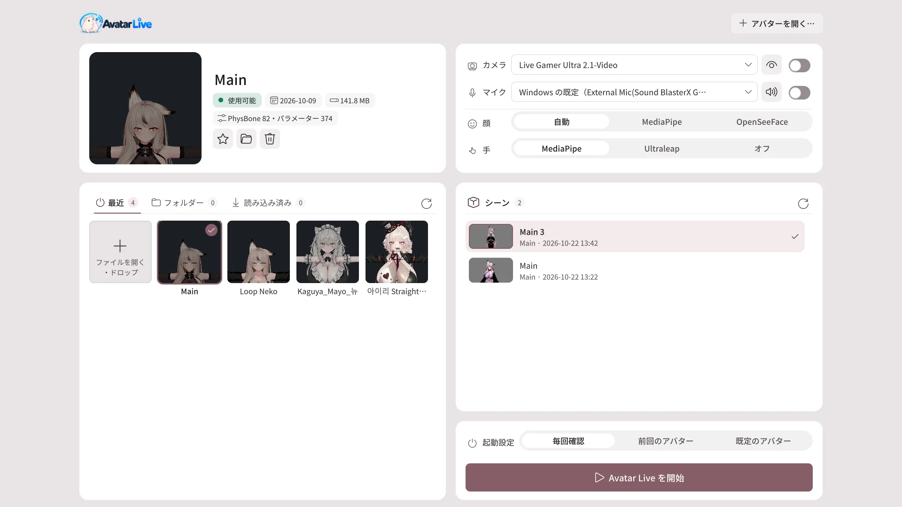
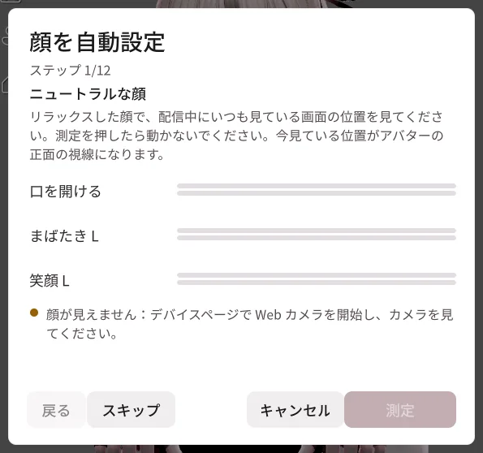
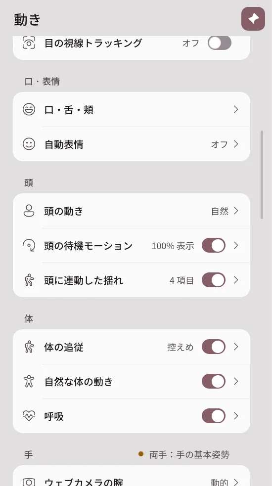
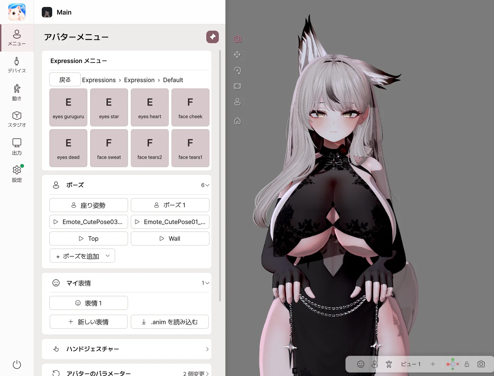
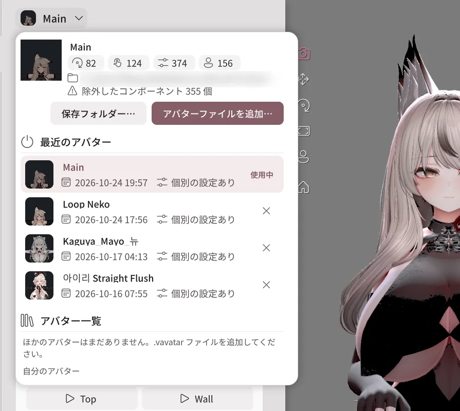
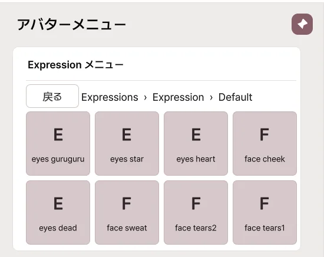
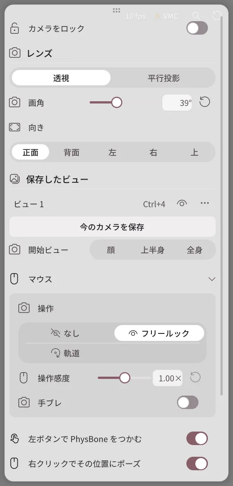

VRM変換なしで
アバタープロジェクトから一度書き出せば完了。アバターを改変しても、書き出し直すだけです。

VRChatアバターのための、Windows用VTuberアプリ
VRM変換も、複雑な再設定もなしで。
使い慣れたアバターを、配信や画面共有に活用しましょう。
こんなアプリで、すぐに使えます
機能
作り直す必要はありません。アバターに込められたものが、そのまま動きます。

アバタープロジェクトから一度書き出せば完了。アバターを改変しても、書き出し直すだけです。

Poiyomi、lilToonなど、アバターに使っているシェーダーをそのまま表示します。
髪の揺れ、衣装のトグル、表情ボタンまで、VRChatと同じ設定で動きます。

Webカメラひとつで、表情や視線、指の関節、全身まで。iPhoneやVMC（全身トラッカー・グローブ）も、部位ごとに組み合わせて使えます。

手が画面に映っていないときも、タイピングやマウスに合わせて手が動きます。入力した文字は記録しません。

OBSには透明背景で、Discordにはゲームとアバターをひとつの画面にして送ります。
使い方
VRChatにアップロードしていたアバターのUnityプロジェクト（2022.3.22f1）を開きます。
Curious Bobby - Avatar Exporterのボタンひとつで、.vavatarファイルを作ります。
ファイルを開いてWebカメラをオンにすれば、すぐに動きます。その後は、Unityは必要ありません。
VRM 0.x／1.0 ファイルは Unity なしで直接読み込めます。VRChat アバターを .vavatar として書き出す場合は Unity プロジェクトが必要です。.vrca ファイルは直接開けません。 書き出しガイドを見る
見どころ

最近使ったアバターを選ぶか、ファイルをドラッグ＆ドロップするだけ。ライティングとカメラは、アバターごとに記憶します。

VRChatで使っていたメニューを、そのまま押せます。よく使う項目は、ボタンやショートカットにしておけます。


OBSなしで、ゲーム画面の上にアバターを重ねて共有します。フレンドにはゲームとアバターが、自分にはゲームだけが見えます。


BOOTHで追加の部屋を購入すると、注文番号ひとつで部屋一覧に部屋が増えます。部屋のライティングと雰囲気も一緒に届きます。
配信連携・ベータ
Twitch・CHZZK・SOOPのイベントやDiscordの友達のリアクションに合わせて、物を投げたり、水をかけたり、照明を変えたりします。Pro機能で、現在はベータです。

DiscordのサーバーやグループDMにAvatar Liveアプリを追加してください。アプリが求めるのはコマンドの権限だけで、接続コードで自分のチャンネルとつながります。
比較
対応範囲は、ソフトによって異なる場合があります。
エディション
BasicとProは同じプログラムです。入力したライセンスで、エディションが決まります。
個人での利用
1,990円
配信・動画の公開・商用利用
3,980円
すでにBasicをお使いなら、BOOTHのアップグレード（1,990円）でProになります。
価格はBOOTHの表示に準じます。デジタル商品の性質上、購入後の返金は原則として難しいため、ご購入前に必要なものをご確認ください。 返金ポリシー
FAQ
はい。VRChat にアップロードしていたアバターの Unity プロジェクトから Exporter で書き出せば、衣装やアクセサリーのトグルまで、Expression メニューが VRChat と同じように動きます。シェーダーや PhysBone もそのままです。
VRM 0.x／1.0 ファイルの読み込みには Unity は不要です。VRChat アバターを .vavatar に書き出す場合は Unity プロジェクト（2022.3.22f1）が必要ですが、書き出したあとは Unity なしで使えます。
はい。VRM 0.x／1.0 ファイルを Avatar Live に直接読み込めます。ただし一部の VRM 0.x モデルは、特殊なシェーダーに対応しておらず読み込めない場合があります。
アバターに使われているシェーダーをそのまま表示します。Poiyomi、lilToon など、200 種類以上のシェーダーでテストしています。
はい。画面共有をオンにして、Discordで「Avatar Live Share Output」を選ぶと、ゲームとアバターが一緒に共有されます。
Basicは個人での利用（フレンドとの非公開のDiscord共有を含む）、Proは配信・動画の公開・商用利用のためのエディションです。Proは4K出力、ウォーターマークなし、ポージング、ポーズライブラリ、オブジェクト、配信連携とノードエディターに対応しています。
はい。ProでTwitch・CHZZK・SOOPを接続すると、フォロー・ドネーション・チャンネルポイントなどのイベントに合わせて、物を投げる、液体をかける、照明を変えるなどを実行します。配信連携は現在ベータなので、問題があればアプリのエラーレポートでお知らせください。
はい。DiscordのサーバーやグループDMにAvatar Liveアプリを追加し、接続コードでチャンネルをつなぐと、友達がボタンや/リアクションコマンドでリアクションを送れます。自分のAvatar Liveが起動しているときだけ動作します。
はい。BOOTHで購入したDLCの部屋はBasicでも使えます。注文番号を設定 → ライセンス → 別のコードを入力に入力すると、部屋一覧に表示されます。内蔵の部屋と部屋のパーツ編集はPro機能です。
Windows 10 / 11（64ビット）のみ対応しています。